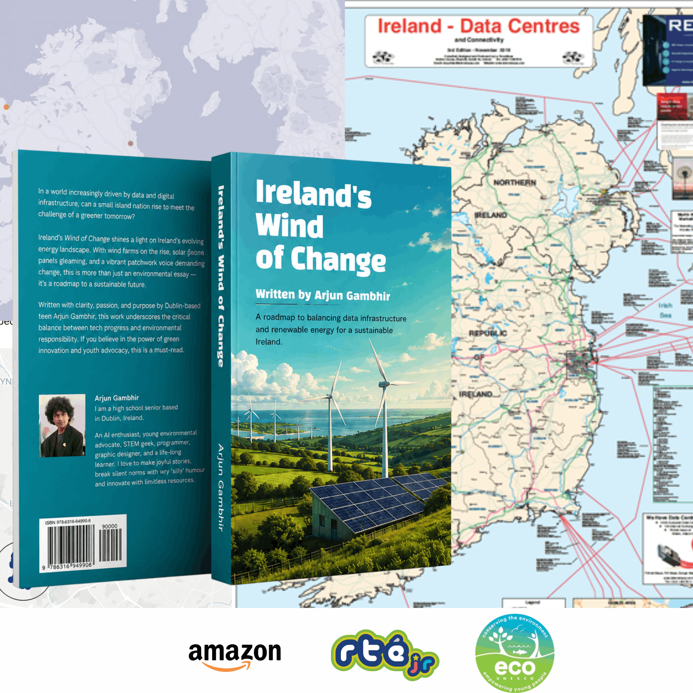
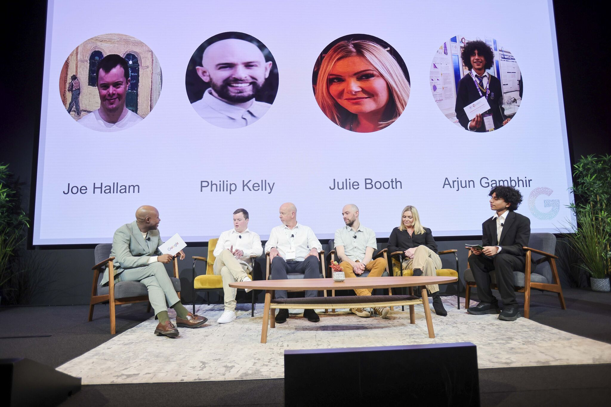
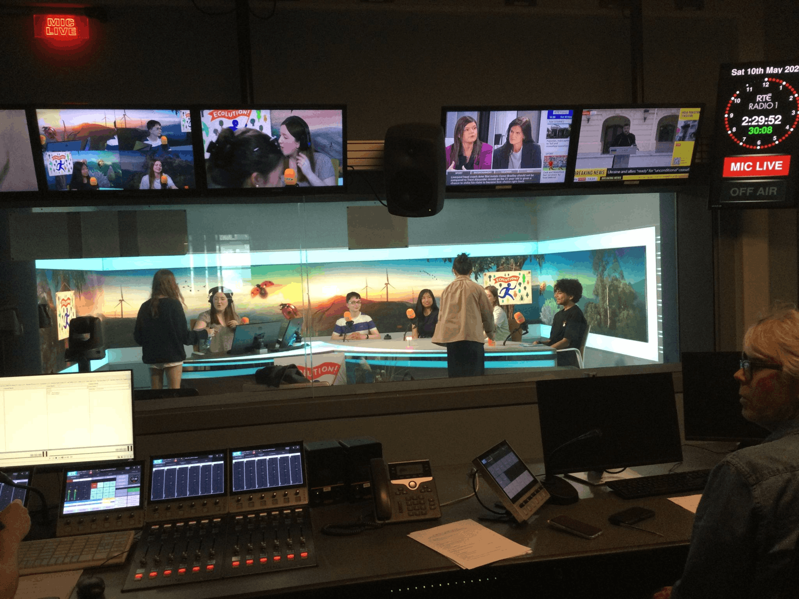
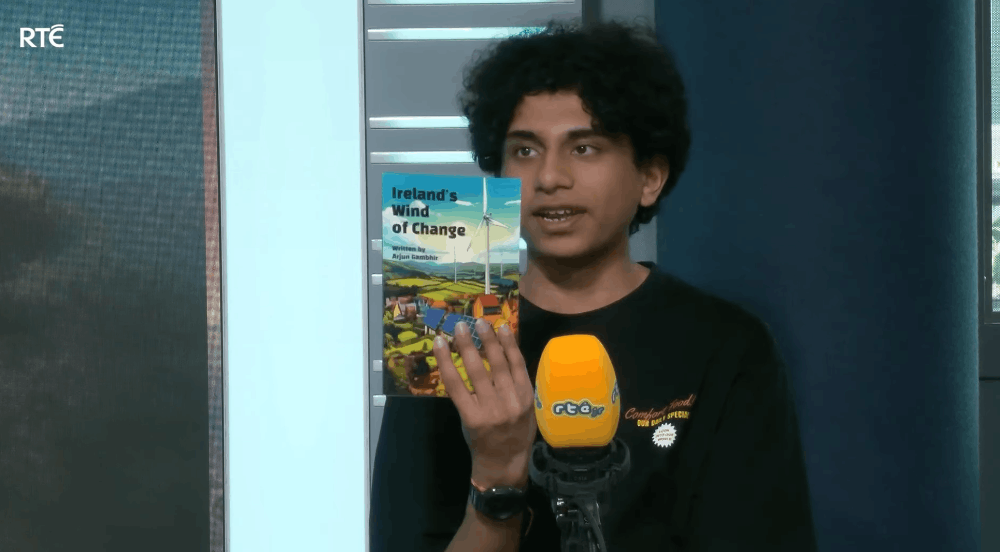
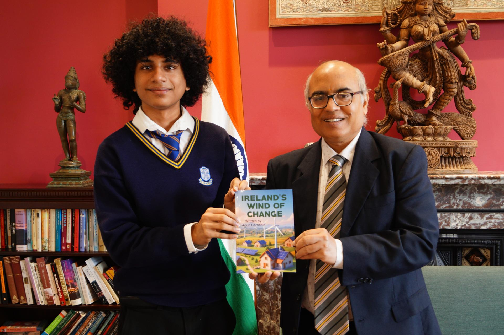
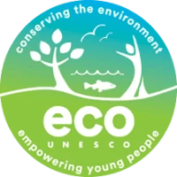

Ireland's Wind of Change
Video
About
My inspiration
In Ireland's Wind of Change, I explore how the country can balance these pressures without treating technology and sustainability as opposing goals. The book examines wind and solar power, grid limitations, planning barriers, energy storage, and the growing demand created by data centres.

Introduction
A key aim of the project was to make these complex issues clear and accessible for younger students. Rather than offering one simple solution, the book highlights the need for stronger infrastructure, responsible development, and closer collaboration between government, industry, researchers, and communities.

Public conversation
The project also reflects my belief that young people should be included in conversations about climate and technology policy. That belief led to opportunities to present the work through Google's AI in the Community initiative and bring a youth perspective into the discussion.

Media and outreach
The ideas from the book also travelled into public media through the RTÉjr Ecolution podcast, where I discussed renewable energy and the role young people can play in Ireland's climate transition.

Recognition pathway
I was also honoured to share the project at the Embassy of India and present a copy of the book to the Ambassador of India to Ireland.

Recognition

- Presented through Google's AI in the Community initiative.
- Featured on the RTÉjr Ecolution podcast.
- Honoured to be invited to the Embassy of India by the Ambassador of India to Ireland to present a copy of the book.
- Connected climate communication, renewable energy, and technology policy for younger audiences.